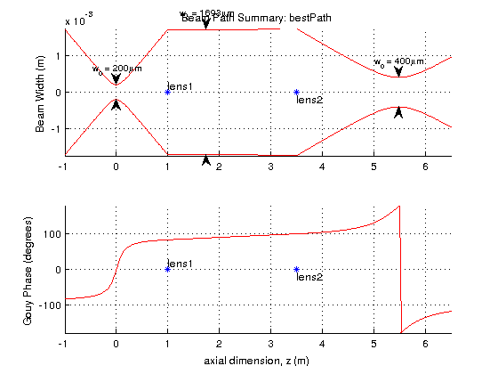

a la mode demonstration
mode matching and beam propagation solutions in MATLAB.
a la mode is a stimple library of gaussian ABCD matrix tools intended to optimize and visualize optical systems.
Contents
simple beam path
In this example, we will design a simple beam path and then define a target beam for modematchin, and choose an optimum configuration from a list of possible lens choices.
% here we design an initial simple beam path goo = beamPath; goo.addComponent(component.lens(1.25,.75,'lens1')); goo.addComponent(component.lens(1.75,3.25,'lens2')); goo.seedWaist(.2e-3,0); % plot the results zplot = -1:.01:6.5; goo.components goo.plotSummary(zplot);
ans =
label z (m) type parameters
----- ----- ---- ----------
lens1 0.7500 lens focalLength: 1.2500
lens2 3.2500 lens focalLength: 1.7500

mode matching optimization
goo.targetWaist(.4e-3,5); % we create a list of possible lens choices focalLengthList = [-.75;.5;1.75;-2;-1;2;3;1;2.5;1.25]; lensList = component.lens(focalLengthList); tic; [pathList,overlapList] = goo.chooseComponents(... 'lens1',lensList,[0.5 3],... % choose lens1 from the list, 'lens2',lensList.duplicate,[3.5 4],... %duplicate the list, this allows ... % the same component to be chosen more than once 'target',[4.5,6]... % we can also allow the target waist position to vary while optimizing the overlap ,'-vt',.25); % set the minimum initial overlap to 0.25, if a combination of components % has an overlap less than this, it will be skipped without trying to optimize the lens positions toc
Searching through 100 combinations. Minimum initial overlap: 0.25 current overlap: 0.98623. best so far: 0.98623. 72 more to try. current overlap: 0.93378. best so far: 0.98623. 70 more to try. current overlap: 1. best so far: 1. 42 more to try. current overlap: 1. best so far: 1. 28 more to try. current overlap: 0.84139. best so far: 1. 22 more to try. current overlap: 1. best so far: 1. 8 more to try. current overlap: 0.49143. best so far: 1. 7 more to try. current overlap: 0.45192. best so far: 1. 4 more to try. current overlap: 0.37431. best so far: 1. 3 more to try. current overlap: 0.90433. best so far: 1. 2 more to try. current overlap: 0.4031. best so far: 1. 1 more to try. current overlap: 0.64769. best so far: 1. 0 more to try. Elapsed time is 14.038783 seconds.
select the best solution and plot it
from the list of all solutions, we may choose the one which has good modematching, but also has minimal sensitivity to component location.
pathList = pathList(overlapList >= 0.99); sensitivityList = pathList.positionSensitivity; [sensitivityList,sortIndex] = sort(sensitivityList); pathList = pathList(sortIndex); bestPath = pathList(1); % print the component list to the command window disp(' ') disp(' Optimized Path Component List:') display(bestPath.components) bestPath.plotSummary(zplot);
Optimized Path Component List:
=
label z (m) type parameters
----- ----- ---- ----------
lens1 0.9965 lens focalLength: 1
lens2 3.5014 lens focalLength: 2
 other features and limitations
Features:
- lives inside MATLAB
- built-in beam width measurement fitting
- define beams as eigenmodes
- angular, lateral, and positional motion sensitivity calculations
- calculate gouy phase seperations of optical elements
- comprehensive, cross referenced help documentation
Limitations:
- Totally 1-D
- all components are 'thin'